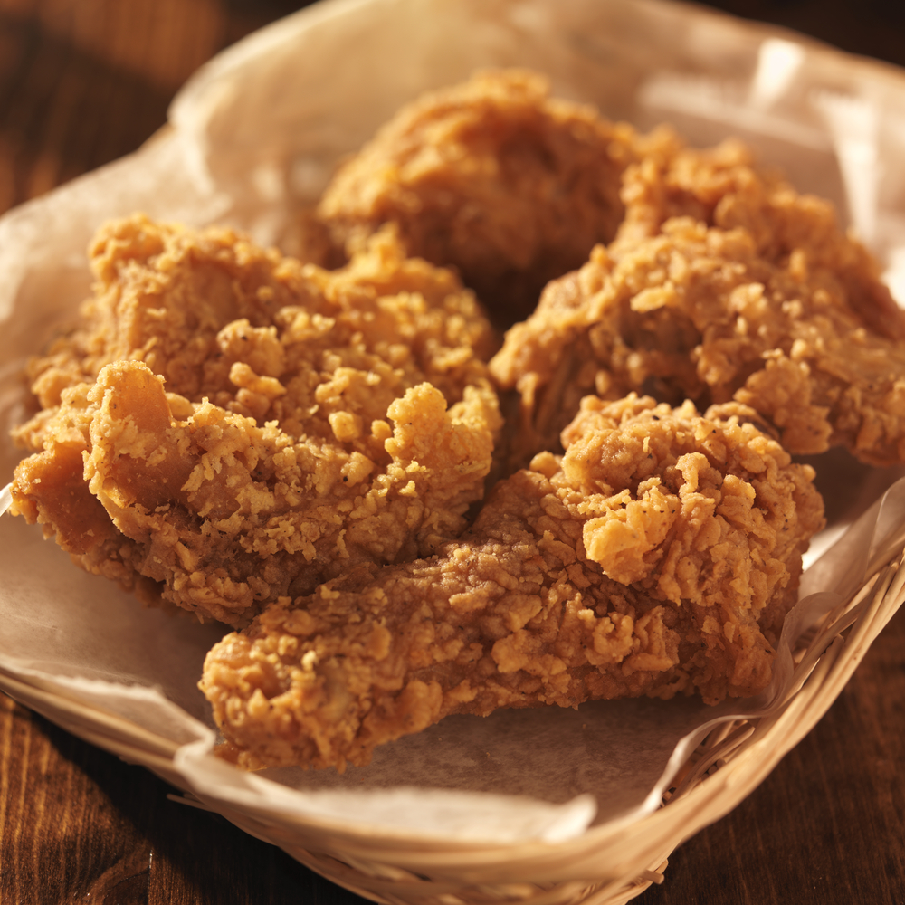

Fried Chicken

Description
Fried chicken, that golden-armored warrior of comfort food, is a symphony of crunch and tenderness. Each bite delivers a satisfying crackle of seasoned crust, revealing juicy, flavorful meat within. It's a dish with deep roots, born from simple necessity and elevated to deliciousness, enjoyed across cultures and continents. Whether dipped in creamy sauce or savored on its own, fried chicken reigns supreme as a king of flavor, bringing families and friends together in its delicious embrace.
Ingredients
- 2 pounds bone-in, skin-on chicken pieces
- 1/2 cup buttermilk
- 1 egg, beaten
- 1 table spoon hot sauce
- 1 teaspoon paprika
- 1 tbsp smoked paprika
- 1 tbsp garlic powder
- 1 tbsp onion powder
- 1/2 black pepper
- 1/2 tbsp salt
- 1 cup all purpose flour
- 1/2 cup corn starch
- vegetable oil for deep frying
- cooking thermometer
Steps to make fried chicken
- Marinate the Chicken: Wash and pat the chicken pieces dry. In a large bowl, combine buttermilk, egg, hot sauce (if using), and spices. Add the chicken pieces and toss to coat. Cover and refrigerate for at least 2 hours, or up to overnight.
- Prepare the Coating: In a separate bowl, whisk together flour and cornstarch (if using). Season with additional salt and pepper if desired.
- Heat the Oil: Fill a large Dutch oven or pot with enough oil to reach a depth of 2-3 inches. Heat the oil over medium heat to 350°F (175°C). Use a cooking thermometer to monitor the temperature.
- Dredge and Fry: Remove the chicken from the marinade and let the excess drip off. Dredge each piece in the flour mixture, shaking off any excess. Carefully place the chicken in the hot oil, avoiding overcrowding the pot. Fry for 5-7 minutes per side, or until golden brown and cooked through (internal temperature should reach 165°F).
- Drain and Serve: Transfer the fried chicken to a paper towel-lined plate to drain excess oil. Let cool slightly before serving. Enjoy hot with your favorite dipping sauces!